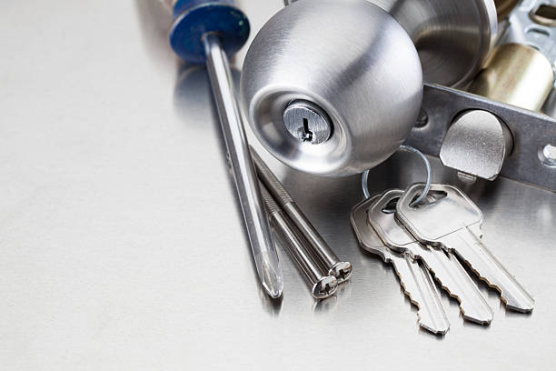

Ne pas forcer à Vaugirard
Quand la clé bloque dans Paris 15e, insister peut casser le métal dans le cylindre. Le premier réflexe est de relâcher la pression, puis d’appeler avant d’aggraver la panne.
Clé coincée ou cassée : diagnostic avant intervention
Clé bloquée dans serrure Paris 15e: clé coincée, clé qui ne tourne plus, clé cassée, cylindre grippé ou porte verrouillée vers Vaugirard. Prix annoncé avant intervention. L’objectif est d’extraire, débloquer ou remplacer seulement ce qui est nécessaire, sans forcer la clé ni abîmer la porte.

Quand la clé bloque dans Paris 15e, insister peut casser le métal dans le cylindre. Le premier réflexe est de relâcher la pression, puis d’appeler avant d’aggraver la panne.
À Vaugirard, le contrôle commence par le cylindre, la clé et la pression du pêne. Cette lecture évite de transformer une clé coincée en remplacement complet alors qu’un déblocage peut suffire.
Lorsque le fragment reste visible dans le 75015, l’extraction propre passe avant la pièce neuve. Le barillet est changé seulement si la rotation reste mauvaise après le retrait.
Avant tout geste à Vaugirard, le prix est expliqué: extraction simple, porte fermée, cylindre à remplacer ou sécurisation si la serrure ne tient plus.
Une clé bloquée dans une serrure peut sembler anodine, mais le mauvais geste peut transformer une panne simple en cylindre cassé. Dans Paris 15e, le cas le plus fréquent vient d’une clé usée, d’un double approximatif, d’un cylindre grippé ou d’une porte qui appuie sur le pêne.
Autour de Vaugirard, le contexte compte: grands immeubles et portes très utilisées. Le serrurier commence donc par savoir si la porte est ouverte ou fermée, si la clé est entière ou cassée, et si la serrure a déjà donné des signes de fatigue.

Lorsque la clé entre mais refuse de tourner à Vaugirard, il faut distinguer un cylindre grippé d’une porte sous pression. Si le pêne est bloqué dans la gâche, la clé peut donner l’impression d’être coincée alors que la serrure subit une contrainte extérieure.
Le cas typique ici: clé coincée après usage intensif à Vaugirard. Le dépannage consiste à identifier la cause avant de choisir entre extraction, ouverture, réglage, remplacement du cylindre ou sécurisation provisoire.
Une clé coincée dans Paris 15e peut venir d’un détail très simple ou d’un mécanisme plus fatigué. À Vaugirard, le serrurier regarde d’abord la forme de la clé, la réaction du cylindre et la pression de la porte avant de parler de remplacement.
Dans le 75015, l’objectif est de comprendre la panne sans brutaliser la serrure. Une extraction propre suffit parfois, alors qu’un cylindre marqué, une clé cassée profondément ou une serrure multipoints sous tension demande un devis plus précis.
Quand le problème vient de barillet fatigué à Vaugirard, un cylindre ancien accroche davantage après plusieurs doubles ou une perte de clés. Le serrurier teste la clé sans forcer et vérifie si le barillet reprend une rotation normale.
Si plusieurs clés donnent un comportement différent dans le 75015, le diagnostic compare les doubles avant de condamner la serrure. Cette étape évite une pièce neuve lorsque seul l’usage de la clé est en cause.
Un cas de double imprécis peut bloquer la clé même si elle n’est pas cassée. À Convention, le serrurier contrôle la porte ouverte puis fermée dès que c’est possible, afin de séparer le souci de cylindre d’un souci d’alignement.
Cette lecture est importante autour de Vaugirard: elle permet de choisir entre déblocage, extraction, réglage léger, remplacement de cylindre ou sécurisation si la serrure ne répond plus correctement.
Dans Paris 15e, chaque panne se lit selon trois éléments: la position de la porte, l’état visible de la clé et la résistance du cylindre au premier mouvement.
À Convention, la clé peut entrer normalement puis rester bloquée au demi-tour. Le serrurier vérifie l’usure, la pression du pêne et la réaction du cylindre avant d’utiliser un outil d’extraction.
Ce contrôle à Vaugirard évite d’abîmer une serrure encore récupérable et permet d’annoncer clairement la suite: le retrait de clé, le contrôle multipoints ou la pose.
Vers Commerce, un fragment peut rester dans le barillet après une tentative trop appuyée. Si le morceau est accessible, l’extraction est privilégiée avant toute pièce neuve.
Si le fragment est profond ou si le cylindre accroche encore à Vaugirard, le serrurier explique l’option de remplacement avant de poser un nouveau barillet.
Lorsque la porte est fermée dans Paris 15e, le dépannage doit traiter la clé et le verrouillage en même temps. Le cylindre, le pêne et les points de fermeture sont examinés avant d’agir.
Une porte blindée à Vaugirard impose une méthode plus précise: protecteur, cylindre haute sécurité et points multipoints limitent les gestes possibles.
L’intervention suit une progression claire dans le 75015: observer la clé, comprendre la contrainte, vérifier la porte, annoncer le prix puis débloquer sans geste inutile.
À Vaugirard, la clé est libérée progressivement lorsque le cylindre répond encore et que la porte ne force pas trop sur le mécanisme.
Dans le 75015, l’extraction est prioritaire si le morceau reste visible. Le changement de cylindre intervient seulement si le barillet reste abîmé ou dangereux.
Un cylindre grippé à Vaugirard peut accrocher, durcir au dernier tour ou empêcher de retirer la clé même après ouverture.
Autour de Convention, les points haut, bas et latéraux sont contrôlés, car une contrainte multipoints peut bloquer la clé sans casser le cylindre.
Le tarif est annoncé avant extraction, ouverture ou remplacement du cylindre dans Paris 15e.
Après déblocage à Vaugirard, la serrure est testée porte ouverte puis porte fermée. Ce passage permet de vérifier que la clé ne se coince pas de nouveau au premier usage.
Si la clé d’origine est trop marquée, si le cylindre reste dur ou si la porte force dans le bâti du 75015, une solution est expliquée sans automatisme. L’objectif reste une serrure fiable, pas une pièce changée sans raison.
N’insistez pas et évitez de tordre la clé. Dans Paris 15e, le serrurier vérifie si la clé est simplement coincée, si le cylindre est grippé ou si la porte met le pêne sous pression.
À Vaugirard, l’extraction propre est tentée quand la clé reste accessible. Le cylindre est remplacé seulement si le barillet accroche encore ou si la sécurité n’est plus fiable.
Dans le 75015, la cause peut venir d’une clé usée, d’un double imprécis, d’un cylindre sec, d’une gâche décalée ou d’une serrure multipoints sous contrainte.
Pas automatiquement. Autour de Convention, le serrurier contrôle le cylindre, teste la rotation et explique si la serrure peut encore fonctionner sans risque.
Le prix dépend de la position de la porte, de l’état de la clé, du type de cylindre et de la nécessité de remplacer une pièce. Dans Paris 15e, le montant est annoncé avant intervention.
Oui. À Vaugirard, l’intervention tient compte du protecteur, du cylindre haute sécurité et des points multipoints avant de choisir l’ouverture, l’extraction ou le remplacement.
Pour compléter le diagnostic dans Paris 15e, ces pages orientent vers la porte fermée, la serrure bloquée, le cylindre ou l’urgence selon le cas rencontré.
Appelez en indiquant Paris 15e, le quartier, si la porte est ouverte ou fermée, et si la clé est entière ou cassée. Le prix est annoncé avant intervention.